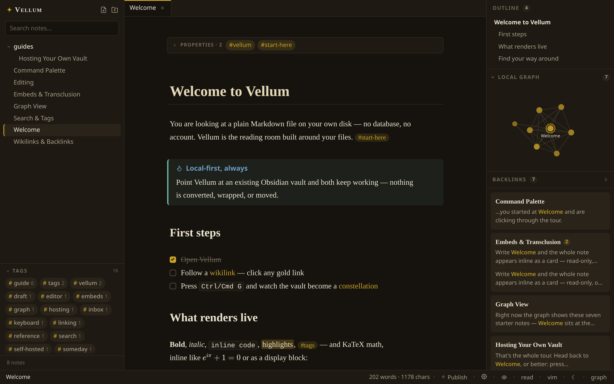
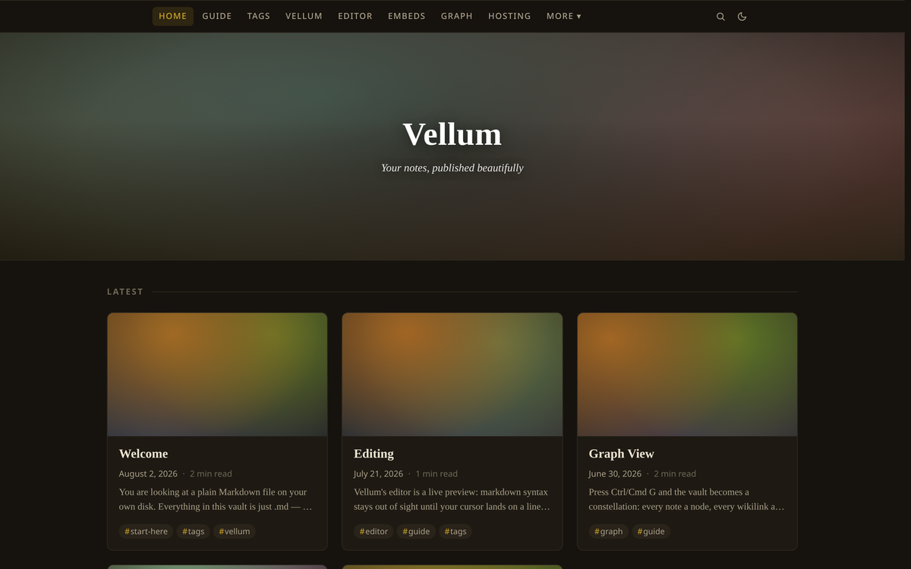
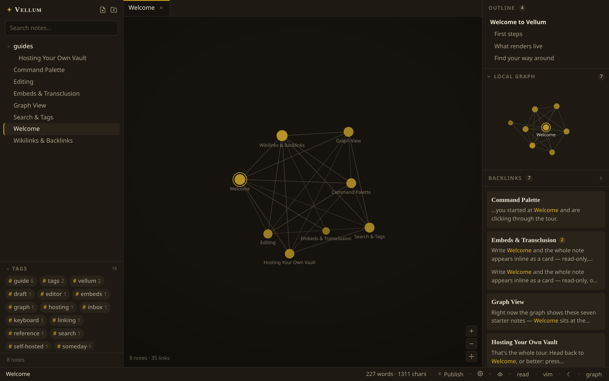
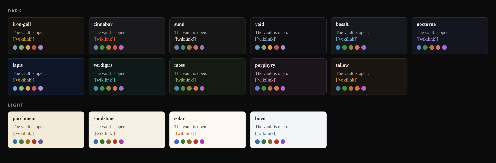
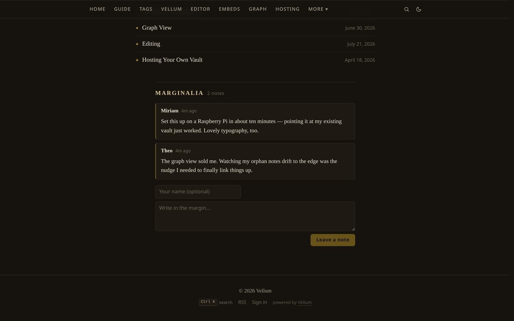
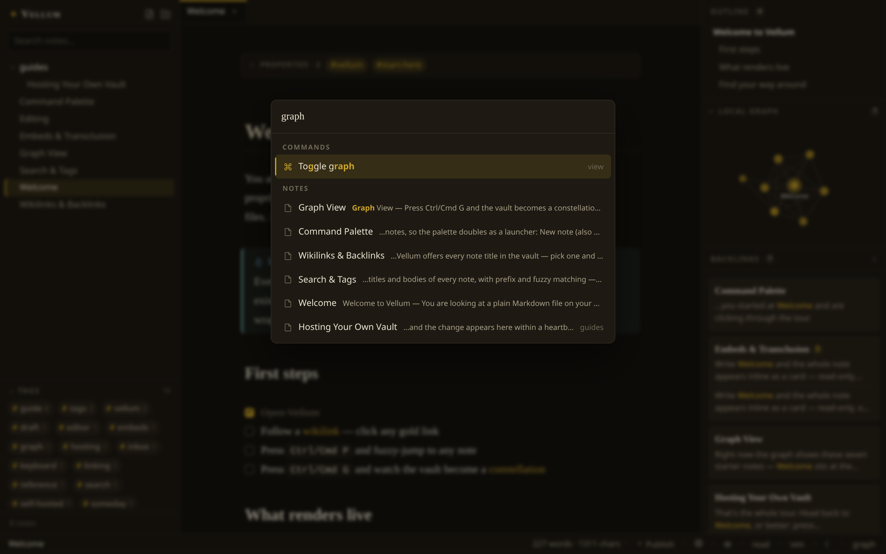
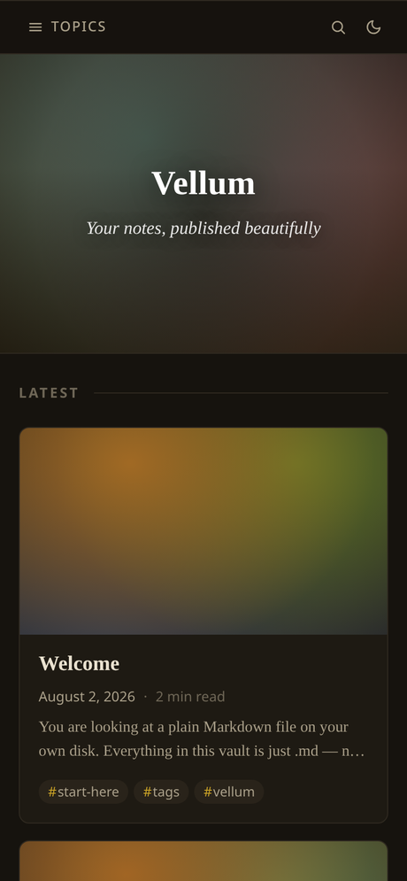

Point it at a folder of plain Markdown. Edit like Obsidian. Publish like a blog.

Mark any note publish: true and it becomes part of your public site — magazine dashboard, topic navigation, RSS, and reader comments. Everything else stays private.

A force-directed graph of every wikilink, interactive at thousands of notes, plus a live local graph beside each note.

Iron-gall, void, lapis, parchment — then make it yours: site name, logo, favicon, custom CSS and fonts, all from an in-app settings panel.

Readers can leave notes in the margins of your published pages. You moderate with one click.

Command palette, quick-switcher, slash menu, vim mode, daily notes, paste-to-upload images.

The public site is fully responsive; RTL languages and KaTeX math render beautifully everywhere.
Node ≥ 22, no database, no build step for your notes.
# run it git clone https://github.com/ZahakJ/vellum.git && cd vellum npm install && npm start # point it at your existing Obsidian vault VELLUM_VAULT=~/notes npm start # lock it down & publish npm run hash-password # → ADMIN_PASSWORD_HASH in .env
Everything ships in the box.